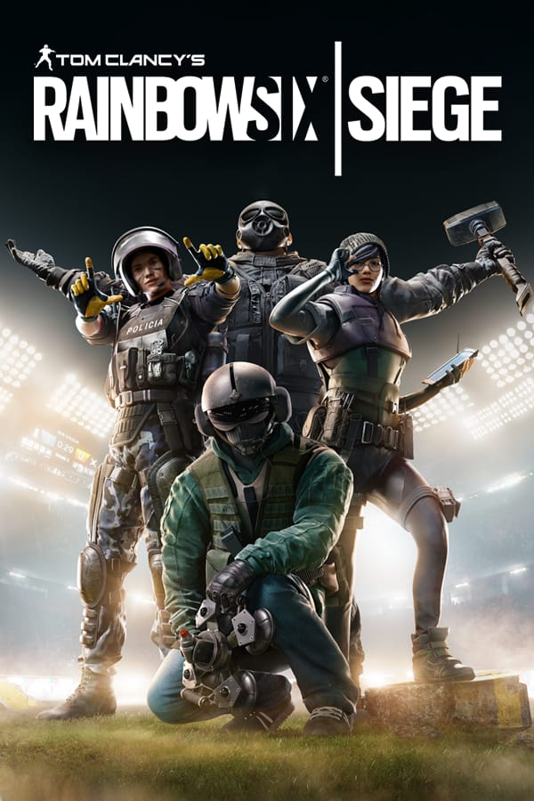
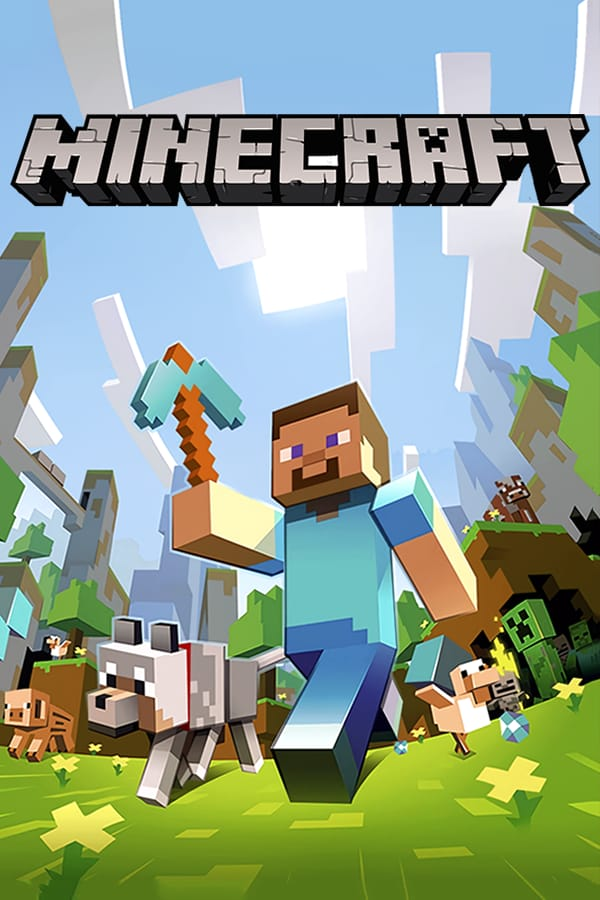
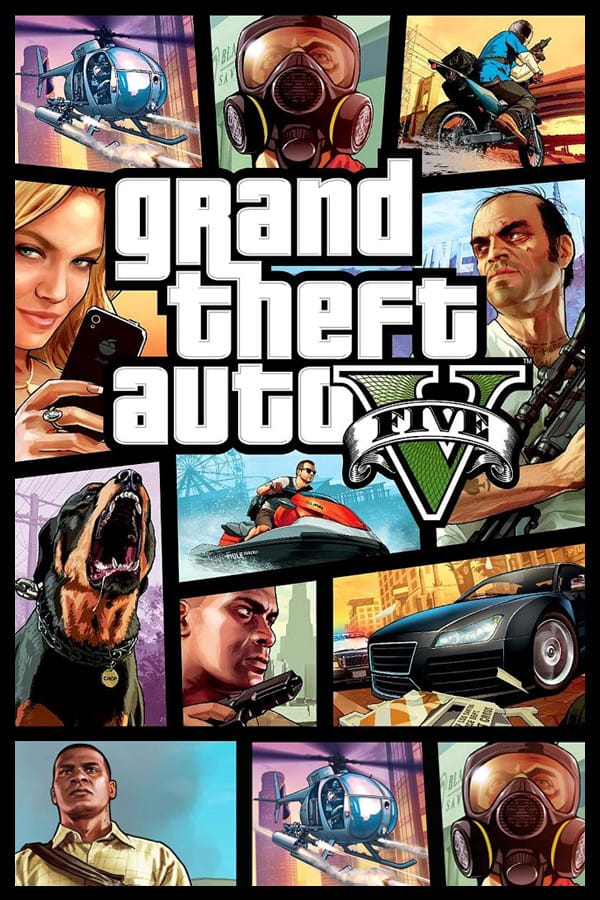
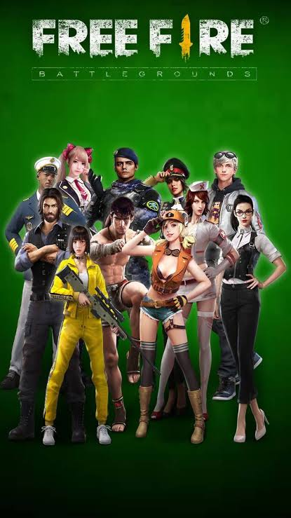
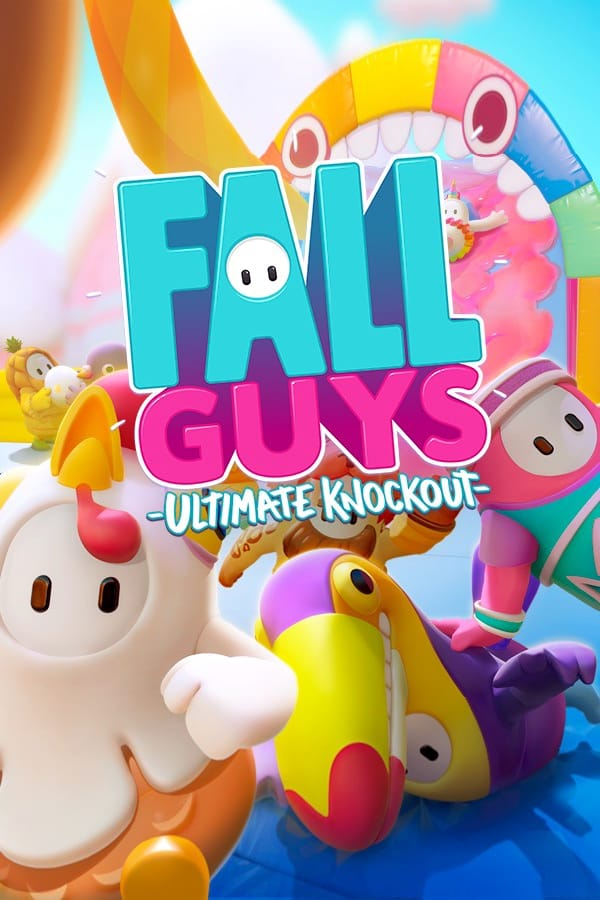
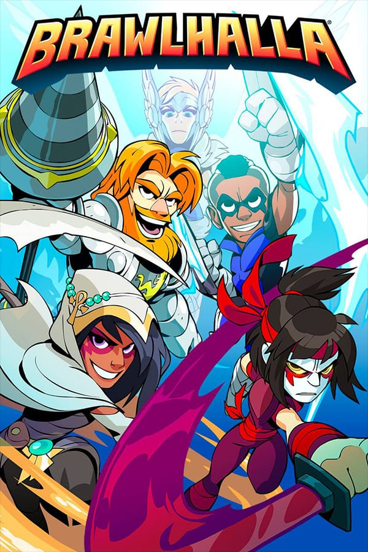

|
FORNITE
Gênero: Battle royale.
Modos de jogo: multijogador/online.
Lançamento: Julho de 2017.
Desenvolvedor: Epic Games, People Can Fly.
Descrição de jogo:
Na batalha vale de tudo, e é necessário usar tudo a seu alcance
para vencer, para tornar-se o vencedor terá de eliminar o maior
número de oponentes possível e chegar vivo até o final da partida.
|
 |
VALORANT
Gênero: Ação e tiro.
Modos de jogo: on-line.
Lançamento: Junho de 2020.
Desenvolvedor: Riot Games.
Descrição de jogo:
Com personagens épicos, o desafio deste jogo é permanecer vivo
e eliminar o maior número possível de adversários.
|
|  |
RAINBOWSIX SIEGE
Gênero: Tiro e ação.
Modos de jogo: Multjogador/on-line.
Lançamento: Dezembro de 2015.
Desenvolvedor: Ubisoft Montreal.
Descrição de jogo
Baseando-se no trabalho em equipe para avançar neste jogo
suas ações e as de seus companheiros devem ser sincronizadas
pois estarão em um ambiente caótico tendi apenas uns aos outros.
|
|  |
MINECRAFT
Gênero: Sobrevivencia.
Modos de jogo: Multijogador/on-line.
Lançamento: Novembro de 2011.
Desenvolvedor: Mojang Studios, Xbox Game Studios, Telltale Games,
4J Studios, Double Eleven, Other Ocean Interactive.
Descrição de jogo:
Sobreviver e construir projetos incríveis com blocos é o objetivo
deste jogo. Ele lhe dá a liberdade para usar a imaginação e criar
projetos surreais.
|
|  |
GTA V
Gênero: Ação e aventura.
Modos de jogo: Um jogador/on-line.
Lançamento: Setembro de 2013.
Desenvolvedor: Rockstar North.
Descrição de jogo:
Um ladrão de banco aposentado chamado Michael acaba fazendo
um acordo com FIB, e então volta a sua antiga profissão. Com o
acordo feito Michael chama seu melhor amigo Trevor que é cão
de briga dele para juntar-se a ele, e para completar a equipe Franklin,
um rapaz com um obscuro com habilidades de volante inigualáveis,
mas nenhuma experiencia em crime.
|
|  |
FREE FIRE
Gênero: Battle Royale
Modos de jogo: Multiplayer/On-line
Lançamento: 30 de setembro de 2017.
Desenvolvedor: 111dots Studio.
Descrição de jogo:
Free Fire é um jogo battle Royale , em que 50 jogadores caem numa ilha em busca da vitória para ver quem será o último sobrevivente.
|
 |
OVERWATCH
Gênero: Battle royale.
Modos de jogo: Multijogador/on-line.
Lançamento: Maio de 2016.
Desenvolvedor: Blizzard Entertainment, Iron Galaxy.
Descrição de jogo:
Um jogo de tiro em primeira pessoa onde o principal objetivo é eliminar os inimigos sem morrer até o final da partida, usando de todos os artifícios possíveis para se manter vivo.
|
 |
ROCKET LEAGUE
Gênero: Esportes e corrida.
Modos de jogo: Multijogador/ On-line
Lançamento: 7 de julho de 2015.
Desenvolvedor: Psyonix, Panic Button games
Descrição de jogo:
Uma partida épica e curiosa de futebol, onde jogadores são subsituidos
por carros, e estes devem fazer gols, este jogo não só possui gráficos
incríveis como sua jogabilidade é dinâmica e divertida.
|
 |
APEX LEGENDS
Gênero: Battle Royale
Modos de jogo: Multijogador/On-line
Lançamento: 4 de fevereiro de 2019.
Desenvolvedor: Respawn Entertainment, Panic Button Games.
Descrição de jogo:
Uma batalha época, com personagens épicos na guerra vale de tudo,
mas o que é mais importante e trabalhar em equipe para vencer a equipe adversária.
|
|  |
FALL GUYS
Gênero: Battle royale.
Modos de jogo: On-line.
Lançamento: Fevereiro de 2020.
Desenvolvedor: Mediatonic.
Descrição de jogo:
Uma disputa sem piedade em uma corrida insanamente difícil onde
aquele que sobreviver e chegar ao fim da corrida primeiro é o vencedor
|
 |
PUBG
Gênero: Battle royale.
Modos de jogo: multijogador/online.
Lançamento: Julho de 2016.
Desenvolvedor: PUBG Corporation, Krafton, Bluehole.
Descrição de jogo:
Fiel a realidade de uma guerra, gráficos realistas e jogabilidade tática
e elaborada, o principal objetivo é sobreviver até o fim da partida,
lutando por sua vida e eliminando os adversários.
|
|  |
BRAWHALLA
Gênero: Jogo eletrônico de Luta.
Modos de jogo: Cooperativo/Multijogador
Lançamento: 30 de abril de 2014.
Desenvolvedor: Blue Mammoth Games.
Descrição de jogo:
Uma luta épica, você pode convidar seus amigos para batalhar
em ambiente com gráficos incríveis jogabilidade histórica.
|
 |
CALL OF DUTY: WARZONE
Gênero: Battle Royale
Modos de jogo: Multijogador/On-line
Lançamento: 10 de março de 2020.
Desenvolvedor: Raven Software, Infinity Ward.
Descrição de jogo:
O objetivo é proteger sua equipe da forma como for necessário,
e derrotar a equipe inimiga.
|